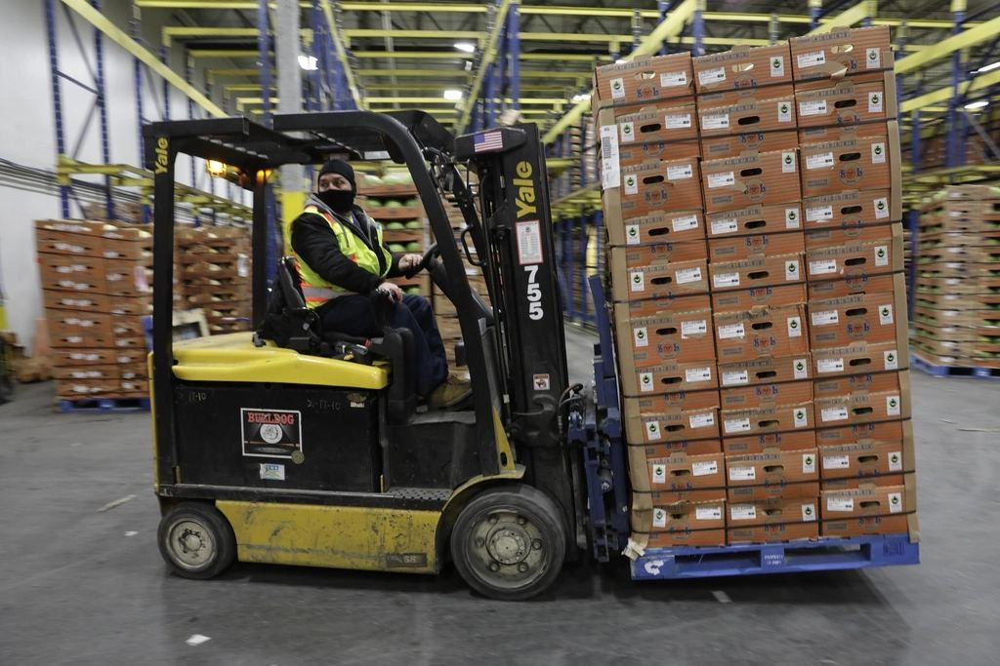
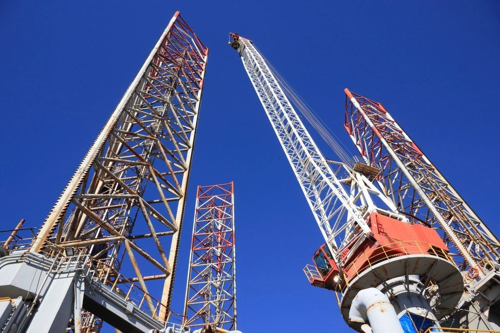
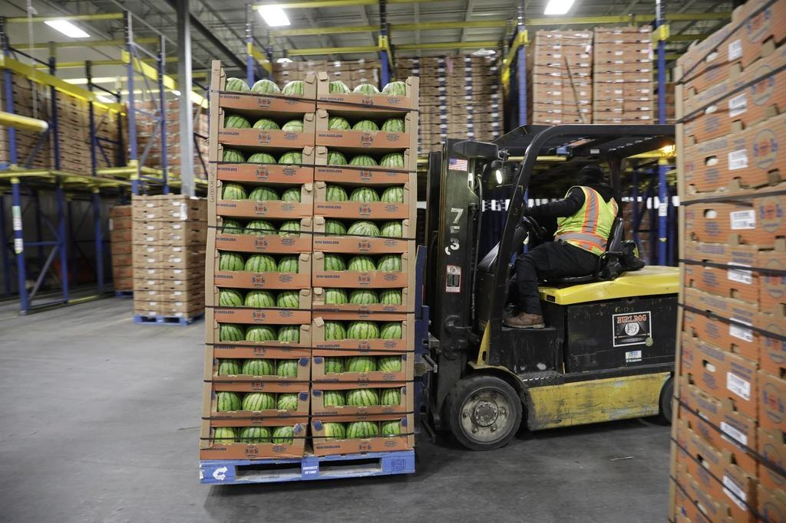
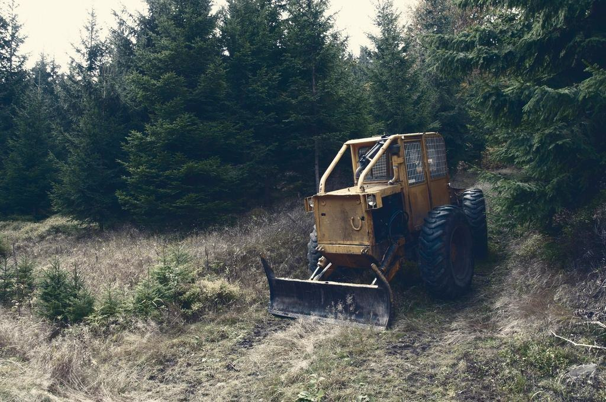
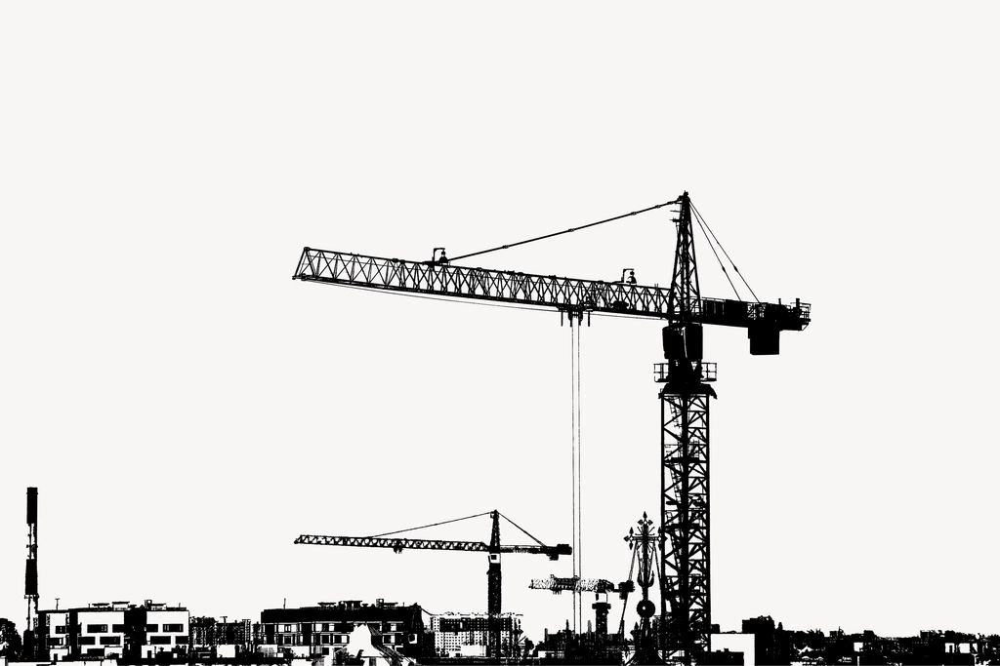
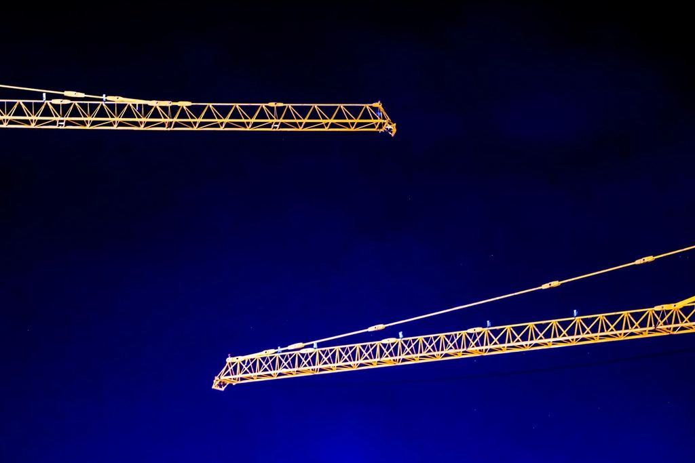

Ingen maskin behöver ta färjan
Grävare, liftar, bodar, ställning och elverk från två depåer i Visby och Hemse. Leverans till hela ön, Fårö inräknat, oftast samma dag som du ringer.
Var på ön ska det byggas?

Entreprenörer och stugägare
”Vi är en entreprenör från Uppsala och hade räknat med att frakta över allt. Rauk hade hela etableringen på plats i Roma innan vårt folk ens landat.”
”Stugpaketet kom på torsdagen, vi grävde ner avloppet under helgen och de hämtade på måndag morgon. Ingen behövde åka till Visby.”
”Elverket på torget lade av mitt under ett seminarium. Ett nytt stod där inom fyrtio minuter.”
- Ö-miljö
Varje mil på ön räknas
- Illustrationsbild

Ön är liten och vägarna smala, så vi planerar leveranserna i slingor och har flyttat en tredjedel av parken till Hemse för att slippa köra tomt söderut. Alla maskiner tankas med HVO från depån i Visby, och ett av våra elverk drivs av solpaneler på bodtaket.
Läs om hur vi arbetar- 100 %HVO i egna lastbilar och maskiner
- 140mil färre körda per år med depån i Hemse
- 4 htill ersättningsmaskin för industrikunder
Leveranser på Gotland


Öns depå sedan 1983
Rauk började 1983 som maskinavdelningen i ett åkeri i Slite, med tre grävlastare och en kranbil. När åkeriet såldes 2016 köpte sju av de anställda uthyrningen, och de äger den fortfarande. Två av dem står i depån i Visby varje morgon.
Alla nyckeltal- 01
 900hyrobjektRedan på ön
900hyrobjektRedan på ön - 02

7delägareSom också jobbar i depån - 03
 40 %Av årets hyror sker i juni–augusti
40 %Av årets hyror sker i juni–augusti - 04
 1983Första grävlastaren i Slite
1983Första grävlastaren i Slite
Illustrationsbilder
Senast i Visby och Hemse


På ön hyr

01 / 08Offentlig sektorAlla referenserRegion Gotland, teknikförvaltningen
 02 / 08BostadsrättsföreningAlla referenser
02 / 08BostadsrättsföreningAlla referenserBrf Innerstaden Visby
 03 / 08UppdragsgivareAlla referenser
03 / 08UppdragsgivareAlla referenserHemse Byggtjänst
 04 / 08LogistikAlla referenser
04 / 08LogistikAlla referenserKlintehamns Hamnförening

05 / 08UppdragsgivareAlla referenserLjugarns Strandpensionat
 06 / 08UppdragsgivareAlla referenser
06 / 08UppdragsgivareAlla referenserGotlands Lammproducenter
 07 / 08UppdragsgivareAlla referenser
07 / 08UppdragsgivareAlla referenserFårösunds Stugby
 08 / 08UppdragsgivareAlla referenser
08 / 08UppdragsgivareAlla referenserSlite Ballast & Kalk
Ordning från elcentral till lift
 01
01ISO 14001
Miljöledningssystemet omfattar båda depåerna, transporterna och avfallshanteringen.
 02
02Behörig elinstallatör
Byggström och elverk kopplas in av vår egen elektriker med auktorisation från Elsäkerhetsverket.
 03
03Liftar och kranbilar besiktade
Alla liftar och kranbilar besiktas av ackrediterat kontrollorgan varje år.

04Avtal och personalliggare
Personalen har kollektivavtal och ID06-kort för arbetsplatser med personalliggare.



Jobba på ön, äg en del av depån
Efter tre år hos oss erbjuds alla anställda att köpa aktier i Rauk. Vi söker folk som vill bo på Gotland året runt och klarar en sommar med full fart.